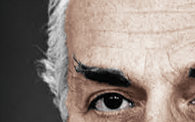
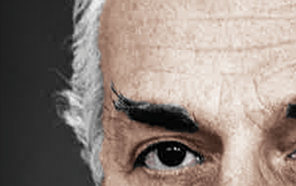

Dr Eugene Reed
Reich Family Genealogical Research Project
 



Remembering Eugene Rosenberg Reed
(Reich Family) 10/11/24 - Eugene Reed was born Eugene Rosenberg on 12 October 1919, in Vienna Austria, to Markus Rosenberg and Taube (Toni) Wallach Rosenberg. He had a brother named Edward Rosenberg who was born on 30 January 1923 in Vienna Austria.
Eugene's father, Markus Rosenberg, was born on February 22nd 1884 in Woloczysak Russia. Eugene's mother was born Taube Wallach on January 18th 1893, in Podwoloczysk Poland. Markus Rosenberg married Taube Wallach at the Jewish temple Militärseelsorge on January 24th 1918 in Vienna Austria. Markus and Taube (Toni) immigrated to the United States on October 28th 1940. They were naturalized as US citizens on 23 October 1941.
Eugene met Hannerl Josefine Grünfeld in Vienna Austria. Hannerl played piano. Eugene played the violin. The couple became engaged. Hannerl was the daughter of Dr Rudolf Grünfeld and Ida Hostovsky Grünfeld. Hannerl's parents were married on 7 February 1909 in Vienna Austria at the Jewish temple, Stadttempel. Hannerl had a sister named Ruth Harriet Grünfeld. Ruth married Dr Ernest Freed.
When the Nazis occupied Austria, Eugene and his family, along with his fiancée Hannerl, fled for their lives and found refuge with relatives in London. At this point, Hannerl was known as Joan. Eugene attended university in London during the blitz of WWII. He earned a bachelor of science at the University of London in 1941. Eugene married Hannerl Josefine Joan Grünfeld on May 17th 1942 in London England. Eugene was an Electronic Engineer. Joan was a Dressmaker.
Eugene and Joan immigrated to the U.S. on November 29th, 1943. They were naturalized as US citizens on 29 January 1944. They lived in Brooklyn New York at 1523 Union Street with Eugene's parents - Markus and Taube (Toni) Rosenberg. Eugene registered for the draft in the U.S. on December 7th 1943. Eugene served in the U.S. Army during WWII.
In the 1950 US Census, Eugene and Joan Reed lived with Eugene's parents and their one year old daughter, Eve, in the upstairs apartment at 1523 Union Street, Brooklyn New York. Eugene's father Markus Rosenberg was listed as the head of the house. The granddaughters of Eugene and Joan Reed, were Polly Hannah Klaas and Annie Nichol. The Reeds last lived in Pebble Beach California.
(National Academies Press by C. Paul Robinson) - Eugene D. Reed was a pioneering leader in microelectronics and integrated circuits at AT&T's Bell Laboratories and subsequently at AT&T's Sandia National Laboratory in New Mexico, where he led one of the major organizations, Component Development and Engineering, with a staff of nearly 1200 professionals. Dr. Reed died October 29, 2008, in Pebble Beach, California, at the age of 89.
Born October 12, 1919, and raised in Vienna, Austria, he developed a fondness for both classical music and science, a duality embraced by many bright young men of his geography and time. When the Nazis occupied Austria, Eugene and his family, along with his fiancée Joan, fled for their lives and found refuge with relatives in London. There he endured the terror of the Blitz while moving ahead with his education, earning a bachelor of science at the University of London in 1941. He and Joan married in 1942 and, with his family, left to join cousins who had earlier emigrated to Brooklyn, New York, where he enlisted in the US Army and served through the end of World War II. Under the GI Bill he attended Columbia University and earned a master's degree (1947) and a doctorate (1953), both in electrical engineering.
Eugene then joined AT&T, the company that had pioneered radar systems that were of irreplaceable value in winning World War II and the leading company in electronics after the war. He served with distinction for the next 30 years at Bell Laboratories and several of its major subsidiaries in New Jersey and Pennsylvania. He helped guide the leading edge of electronics development and engineering, resulting in the fundamental transition from vacuum tubes to integrated circuits.
Along with his technical accomplishments he was steadily selected to take on increasing managerial responsibility. This led to his transfer in October 1975 to Sandia National Laboratories, which was then operated by AT&T for the US Atomic Energy Commission. He served for nearly 9 years as vice president of the organization, responsible for developing the components and systems for arming, fusing, and firing US nuclear weapons. These major responsibilities in highly classified work placed him among a small cadre of scientists and engineers whose contributions ensured US leadership in designing and producing "our nation's nuclear deterrent," which undergirded the security of the United States and the free world during the Cold War and beyond.
When Gene retired in August 1984, to spend his remaining years in California, he had presided over one of the most dramatic periods of change in the history of electronics. At Sandia, the nonnuclear components of US nuclear weapons had grown from systems with a typical total of 30 to 50 vacuum tubes (in the mid-1950s) to nearly a quarter of a million transistors, incorporated in each integrated circuit. Gene played a major role in guiding this revolution, harnessing intelligent systems into not only the arming and fusing functions but guidance and other control functions as well.
The revolution in the use of integrated circuits in microelectronics in the wider world was simply breathtaking throughout Gene's tenure and allowed many major advances in the safety, security, and reliability of nuclear weapons and other important national security systems. Just before his retirement, he predicted that there would likely be no end to the expansion of the utility of electronics systems in the highest security programs, a statement that certainly proved prophetic.


Eugene was a skilled and accomplished technical leader, but he also became known for mentoring many scientists and engineers who would themselves come to occupy highly responsible positions. Among those he helped develop into outstanding leaders at the laboratories were Leon Smith, Bob Gregory, Jack Worth, Bill Spencer, Orval Jones, Harry Saxton, and John Crawford.
Gene is particularly remembered for helping to migrate the technology, skills, and manufacturing techniques that were originally developed at Bell Labs to the crucial defense systems work at Sandia—demonstrating the wisdom of those who, under Harry Truman, had recommended the creation of Sandia as a major standalone lab, like its sister labs at Los Alamos and Livermore, which together comprised the US nuclear weapons research and development mission. Gene's practice of drawing in other key leaders from the Bell system to come to Sandia and, conversely, his assignments of key "Sandians" to serve a rotation at Bell Laboratories—two practices to transfer knowledge of advanced design and production technologies—became a key factor in the rapid growth of US weapons technology. They also helped ensure that these US classified programs remained at the leading edge.
Over time, Gene's wise and judicious assessment was that the technologies that had revolutionized US classified defense systems could also provide similar superior performance in a variety of other applications. His organization gave birth to concepts relevant to diverse fields, such as the first implanted biomedical devices, used as alternatives to injections for delivery of insulin, chemotherapy, and other medications and substances, such as those used for pain management.
Above and beyond Gene's considerable technical and managerial skills and responsibilities, at Bell Labs he had chaired a committee that investigated the continuing education needs of the professional and technical staff, to avoid obsolescence and keep them at the very top of their game. Within one year of their launch in 1968, the in-house education programs grew to enroll about 3000 professionals—making them "the largest graduate school in the world"—significantly larger than MIT in the number of technical "students." Noting a similar need at Sandia, upon Gene's arrival there the president, Morgan Sparks, asked him to chair all of Sandia's educational programs, in addition to his other significant responsibilities. Gene substantially expanded the national lab's in-house educational activities, offered both during and after working hours. For many years "the Sandia model" was used for educational programs at other US national laboratories and major technical companies around the country.
In reflecting on the factors that affected his success at both Bell and Sandia, Gene commented that the proximity and cooperation of the exploratory work by component developers and the ingenuity of systems and subsystems design engineers drove progress on both fronts and led to the creation of new technologies and the identification of novel uses of those advances. He recognized that you could never clearly determine whether major innovations happen because pioneering exploratory systems require new components or because research into exploratory components gives birth to new systems. His greatest contributions were perhaps in integrating both of these approaches to build the extraordinary teams and enable the magnificent advances that together produced very high performance electronic systems—now taken for granted as a hallmark of Sandia's work—and in driving the development of advanced control systems for all US defense systems.
One of the greatest challenges Gene faced during his career at Sandia was the perpetual need for modern facilities for developing and manufacturing the generations of ever smaller electronics. Just before his retirement, he managed to set in motion what eventually became one of Sandia's most famous facilities, the Center for Radiation-Hardened Microelectronics. Although this work began in reclaimed World War II buildings, it quickly converted much of Sandia's campus into "clean rooms" that produced advanced electronics for a wide variety of systems for the stockpile as well as for all major satellites for use in space systems. Soon after completion in the late 1960s the Rad-Hard Microelectronics facility's products quickly diversified to the point that half of its microelectronics systems output served Sandia's core weapons responsibilities, while the other half went to satellite and other space programs, with a surprisingly large portion of its systems also dedicated to other Defense Department programs. This became a pattern for wider applications of Sandia's major advanced electronic systems being applied for the benefit of many US defense and space programs as well as US commercial and industrial systems.
These major national transformations significantly helped to render in fact the words of President Harry S Truman in his letter to AT&T asking the company to manage the Sandia Laboratories: "I believe you have an opportunity to render an exceptional service in the national interest," a phrase that became the enduring purpose for the laboratories.
Throughout his career, Eugene D. Reed made many such exceptional contributions to US technology and to the security of our nation and the world. His life mirrored those very words of exceptional service to our nation.
Gene was survived by Joan, his beloved wife of 66 years, their daughter Eve Nichol, and a granddaughter.
(Monterey Herald Obituaries) PEBBLE BEACH – With sadness the family announces the passing of Eugene Reed, our beloved husband, father, grandfather, cousin and devoted friend, on the morning of October 29, 2008, following a brief illness. He passed very peacefully at his home, with immediate family at his side. Just two weeks prior, we were thankful that Eugene expressed devotion, enjoyment and gratification on his 89th birthday.
Eugene was born and raised in Vienna, Austria, from 1919 to 1938. In his youth, he excelled in school, enjoyed many outdoor physical activities, and developed a lifelong passion for classical music, becoming a proficient amateur violinist. He became smitten with a beautiful Viennese girl, Joan, a lovely pianist, and his future bride, with whom he delighted playing chamber music. On March 15, 1938 the Nazis occupied Austria, forcing all their families and friends to flee for their lives, seeking refuge in hopefully safer European countries. Eugene's immediate and extended families, including Joan, then his fiance, found respite in England at the home of a heaven-sent relative who had settled there many years prior. In London, despite enduring the terror of The Blitz, Eugene completed his B.S. at the University of London in 1941 and married Joan in 1942
Eugene's immediate family eventually reunited with the families of his cousins after many of them immigrated to Brooklyn, New York. Eugene enlisted in the U.S. Army from 1945 to 1946, serving during and just after the final year of World War II. Upon his Honorable Discharge and then many years later during his remarkable career in science, Eugene was awarded citations from both the U.S. Army and Navy. As a G.I. Bill student, he attended Columbia University in New York, earning his M.S. in 1947 and his Doctorate's degree in 1953, both in electrical engineering.
Dr. Reed's distinguished science career, spanning 38 years with AT&T's Bell System and its subsidiaries, included eight major promotions during his 30 years with Bell Labs in New Jersey and Pennsylvania, and eight years with Sandia Labs in New Mexico, where he retired in 1984 as a Vice President, also serving as Chairman of Education and Chairman of Computing, overseeing an organization of 1500 professionals. His numerous honors include a Fellow of the Institute of Electrical and Electronic Engineers (IEEE) and membership into the National Academy of Engineering, a division of the National Academy of Sciences.
Eugene and Joan retired to their favorite vacation spot, the Monterey Peninsula, 24 years ago, settling in Pebble Beach. Eugene considered this area a "national treasure." Blessed with a long, active, full retirement, he served on many community and non-profit wildlife boards, supporting his lifelong passion of protecting animals and their habitat, both wild and domestic. He resumed the violin with zest and discipline, playing with two local orchestras, most recently (at age 87!) with the MPC Orchestra, proudly performing as a first violinist, not to mention being the eldest musician in the ensemble. Eugene won numerous ribbons for his impeccably maintained 1961 Corvette, purchased brand new as his sole vehicle for commuting. He was both loyal and distinguished, highly intelligent, articulate with a keen mind and wry wit that those who were privileged to know him will never forget. He adored both culture and nature with enormous enthusiasm. His intellectual depth, originality of insight, lively articulate conversations and keen knowledge of science, history and musicology, to name a few, will be long remembered and dearly missed.
Eugene leaves Joan, his beloved wife of 66 years; his daughter and granddaughter, Eve and Annie Nichol and his little canine companion, "Bonnie" baby. In lieu of flowers, please send donations to The Big Sur Land Trust, AFRP (Animal Friends Rescue Project) or to your favorite charity.
A home remembrance for immediate family is planned.
Copyright 2024 All Rights Reserved
Research, Writing and Photographic Design by
Reich Family Genealogical Research Project
The Reich Family
Special thanks to the research of Barnett
National Academies Press, Memorial Tributes: Volume 24
EUGENE D. REED, 1919–2008, Elected in 1971
Written by C. Paul Robinson
Eugene D Reed Obituary - Monterey Herald from 15-17 Nov 2008
JewishGen - The Genealogical Research Division of the Museum of Jewish Heritage
"England and Wales Marriage Registration Index, 1837-2005", FamilySearch https://www.familysearch.org/ark:/61903/1:1:QV85-NS6H, Hannerl J Grünfeld, 1942-1942.
"New York, U.S. District and Circuit Court Naturalization Records, 1824-1991", FamilySearch https://www.familysearch.org/ark:/61903/1:1:68P7-SGKD, Entry for Eugene or Eugen Rosenberg and Joan, 29 Jan 1944.
"New York, U.S. District and Circuit Court Naturalization Records, 1824-1991", FamilySearch https://www.familysearch.org/ark:/61903/1:1:6PMV-WN5F Entry for Markus Rozenburg or Rosenberg, 23 October 1941.
"New York, U.S. District and Circuit Court Naturalization Records, 1824-1991," database with images, FamilySearch https://familysearch.org/ark:/61903/3:1:3QHV-J38F-D6YC, Entry for Taube Toni Rosenberg, 23 October 1941.
"New York, New York City, World War II Draft Registration Cards, 1940-1947", FamilySearch https://www.familysearch.org/ark:/61903/1:1:WW16-VPZM, Entry for Eugene Dennis Reed and Mark Rosenberg, 07 Dec 1943.
"United States Census, 1950", FamilySearch https://www.familysearch.org/ark:/61903/1:1:6X5W-ZMSJ, Entry for Marcus Rosenberg and Toni Rosenberg, 10 April 1950.